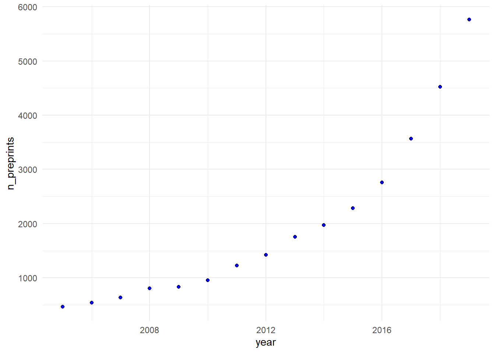

# Load libraries
lapply(c('dplyr', 'ggplot2','kableExtra'), library, character.only = TRUE)Demo
This demo requires R and Quarto Visit the instructions page to get ready.
Demo I - Create your own report
1. Install additional dependencies and packages
Run the code below in the R console (it may take a couple of minutes)
# Install packages
install.packages(c('quarto', 'dplyr', 'ggplot2','kableExtra'))2. Start a new Quarto document
Start a new QMD file
- In the Rstudio menu, go to
File > New File > Quarto document. - Keep the default options, fill in the filename text box
- Save the file with a filename ending
.qmdin the project home directory (visible on the bottom right pane). - Switch between the
visualandsourcetabs of the R studio visual editor - Edit the code in the source tab.
Edit the YAML header
Edit the YAML header delimited by (---). Add information about author, affiliation and date (use last-modified to always display the latest date) and define the output format as pdf or html. Beware of the text indentation! The header can be kept simple or it can contain a lot of information. An example:
---
title: 'Title of the report or page'
subtitle: 'Subtitle'
date: last-modified # Display the date of the last edit
author:
- name: 'Author 1 name'
orcid: 1234-1234-1234-12345
affiliations:
- name: 'Institute, Faculty names'
- name: 'Author 1 name'
orcid: 1234-1234-1234-12345
affiliations:
- name: 'Institute, Faculty names'
format:
html:
toc: true
toc-depth: 4
---3. Create the report content
Code chunks
The following code chunks have executable code to perform different actions on the data
Tip 1: Code execution options
The code chunks are delimited by ```{r} (you can specify other languages like Python, Julia, ObservableJS). For each code you can add execution options to the code chunks with #|, for example #| echo: false will not display the code. In Rstudio you can see the options available if you type #| and then press the TAB ⭾ key on your keyboard . These options can be set globally for the entire document on the YAML header (under execution:).
Load libraries
Let us first load all necessary libraries. Copy the code below inside a ‘code chunk’
Read the data
For this example we will use the data set ‘Funding and Research Output Data’ https://zenodo.org/records/5011201. The dataset is a table (CSV) with longitudinal data related to research outputs of researchers. Each researcher is identified with the variable anonym_id and there are multiple rows per researcher (long format).
We can read the table into a variable named tbl with the following code :
url <- 'https://zenodo.org/records/5011201/files/anonymised_funding_output_data.csv?download=1'
filename <- 'anonymised_funding_output_data.csv'
tbl <- read.csv(url, row.names = 1)Summary of the data
The data is longitudinal, we will summarize the cumulative sum of n_articles_per_year and n_preprints_per_year per researcher ( anonym_id).
data_summary <- summarise(
group_by(tbl, anonym_id),
total_articles = sum(n_articles_per_year, na.rm = TRUE),
total_preprints = sum(n_preprints_per_year, na.rm = TRUE)
)Table
We can render a table summarizing the data. For example:
#kableExtra::kable(head(tbl),format = "markdown")
kable(summary(data_summary)[,2:3],
caption = paste0('Summary of table with ', nrow(data_summary), ' rows'),
booktabs =T) %>% kable_styling(latex_options=c("striped"))| total_articles | total_preprints | |
|---|---|---|
| Min. : 0.00 | Min. : 0.000 | |
| 1st Qu.: 5.00 | 1st Qu.: 0.000 | |
| Median : 22.00 | Median : 0.000 | |
| Mean : 45.78 | Mean : 3.356 | |
| 3rd Qu.: 58.00 | 3rd Qu.: 2.000 | |
| Max. :991.00 | Max. :252.000 |
Plot
We can add a code chunk a plot how the number of preprints developed over time. Note that we add some code execution options for a caption and a label that we can use to reference to this figure in the text.
```{r}
#| label: fig-preprints
#| fig-cap: "Number of preprints over the years."
preprints <- summarise(
group_by(tbl, year),
n_preprints = sum(n_preprints_per_year)
)
ggplot(preprints, aes(x= year, y = n_preprints)) +
geom_point(shape=21, fill = "blue") +
theme_minimal()
```
I can now refer to the Figure 1 in the text using [@fig-label].
Inline code
Now we can use this data_summary and inline code to add a text describing the data using code to read some information from the table.
Use code snippets such as those below in your Markdown text to describe the data
Total number of researchers: `r count(data_summary)`
Maximum number of publications: `r max(data_summary$total_articles)`
Median number of publications: `r median(data_summary$total_preprints)`
References
You can refer to a file with the reference list in the YAML header. In this example with have the .bib file in the same folder as this .qmd file:
bibliography: references.bibThen use [@authorDate] to add a citation. For example, we recommend reading this manifesto for reproducible science (Munafò et al. 2017) or this nice easy-read entitled cut with the tyranny of copy-pasting (Perkel 2022) (yes, it is about R Markdown).
To get the best out of this functionality
Use the Visual editor in R studio and go to insert>citation
4. Render the report
Now that you edit the QMD file with your report:
5. Refine the report
Try to explore different options for code execution:
Demo II - Explore other examples
The are many examples of dynamically generated reports online. Try exploring the links below.
Example 1. Reproducible report in HTML using R Markdown (SNSF report: https://data.snf.ch/stories/open-research-data-2023-en.html)
Example 2. Reproducible report in pdf using Latex (robustness check analysis: https://gitlab.uzh.ch/fabio.molo/nhb-replication.)
Example 3. Website with course materials: https://github.com/avehtari/BDA_course_Aalto/tree/master
Example 4. Reproducible slides with Quarto: https://github.com/kjhealy/flipbookr-quarto/tree/main?tab=readme-ov-file.
Try to reflect about the following questions:
references
Home Home Instructions /instructions/index.html Intro /slides_intro/index.html Demo /demo/index.html Outro /slides_outro/index.html
Made with 
by the Center for Reproducible Science
Free under the CC BY international license 4.0.
Source code on 
Demo – Home Demo – Home Demo – Home Home
Munafò, Marcus R., Brian A. Nosek, Dorothy V. M. Bishop, Katherine S. Button, Christopher D. Chambers, Nathalie Percie Du Sert, Uri Simonsohn, Eric-Jan Wagenmakers, Jennifer J. Ware, and John P. A. Ioannidis. 2017. “A Manifesto for Reproducible Science.” Nature Human Behaviour 1 (1): 0021. https://doi.org/10.1038/s41562-016-0021.
Perkel, Jeffrey M. 2022. “Cut the Tyranny of Copy-and-Paste with These Coding Tools.” Nature 603 (7899): 191–92. https://doi.org/10.1038/d41586-022-00563-z.